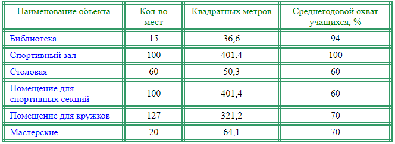

Школа основана в 1963 году. В 1963 – 1966 годах была неполной средней школой. В сентябре 1966 года стала средней школой. В мае 1968 года состоялся первый выпуск обучающихся из 10 класса. В сентябре 1987 года сдан в эксплуатацию спортзал и двухэтажный учебный корпус. Занятие в школе проводятся в одну смену. Начинаются занятия в 8 часов 15 минут. Обучение ведется по общеобразовательным программам.
Единая методическая тема школы:
«Овладения современными педагогическими технологиями как фактор мастерства
педагогов»

Контакты школы:
- Индекс: 676366
- Населенный пункт: Россия, Амурская область, Серышевский район с. Украинка
- Улица: Советская д.47
- Телефон: +7(41642)46520
- E-mail: a.cren@mail.ru